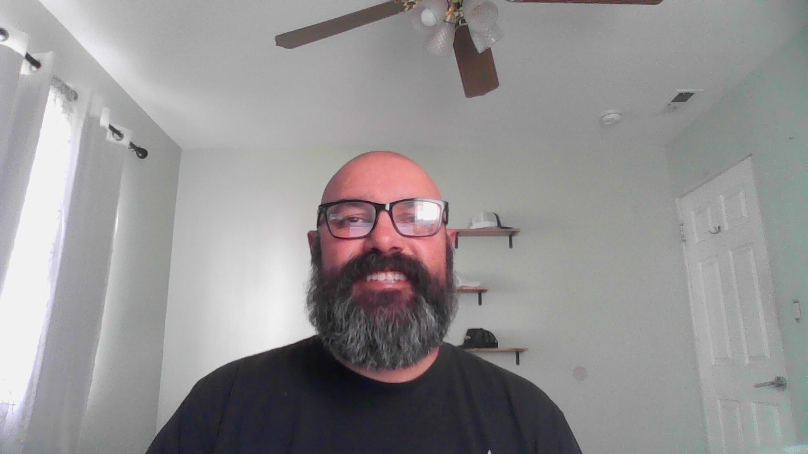

Juan Carlos Lopez - Resume

SUMMARY
An experienced IT Professional looking to break into Web Development. I have 14 years’ experience on
the Operations side. Mainly Desktop Support. I've also worked on service desks and data centers.
EDUCATION
Emily Griffith High School
Denver, CO
Graduated 1996
Professional Experience
OmniTrax | Desktop Support | 02/23 – 08/23
- Assist in the repair, inventory tracking,
management, and deployment of new systems
- Upgrade existing systems
- Daily administration and maintenance of computer devices
- Daily administration and maintenance of user accounts
- Deliver end-user support over the phone and desk side: install, configure and the ongoing usability of user desktop computer, peripheral equipment and software
- Available to work on rotating basis to support the 24X7 on-call of the production environment
- Monitor ticket system: triage incoming helpdesk tickets; work with IT staff as appropriate to determine and resolve reported problems from users
- Ability to work within small IT team where you get to do a lot of different things.
- Perform printer support: troubleshoot issues with printers, copiers and scanners.
- Create and update documentation for user/IT processes; document repeatable processes and procedures
DaVita Kidney Care | Desktop Support | 04/2021 – 08/2022
- Troubleshoot and resolve desktop, software, peripheral and clinical application issues
- Troubleshoot and resolve mobile computing and communications device issues. (iPhones, and iPads)
- Device Set Up and Imaging- Hp, Dell, Lenovo, MacBook, iPads, and iPhones
- Accurately and thoroughly record information into ticket tracking software (Service Now)
- Update tickets, provide status updates and follow up resolutions to teammates
- Set up mobile devices (iPhones & iPads)
- Escalate problems as needed to other 3rd level support groups within predetermined time limit
- Work closely with other 2nd or 3rd level support groups to assist in research, testing, technical documentation
Skills
- Customer Service
- Trouble Shooting
- Bilingual (Spanish/fluent)
Other
Feel free to contact me for a full copy!
Contact Me